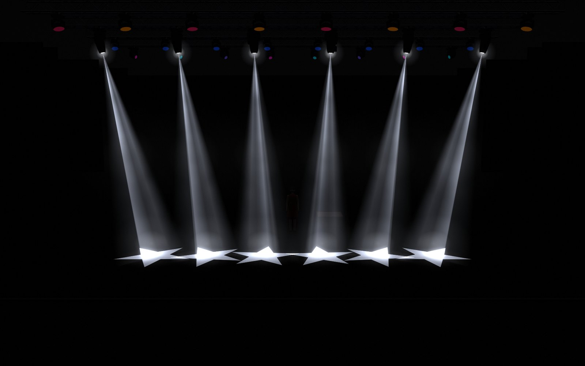
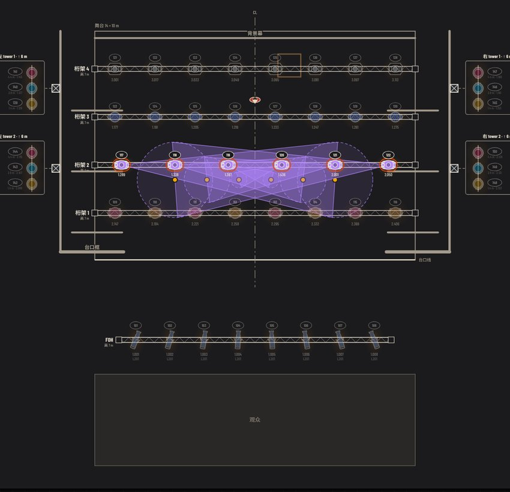
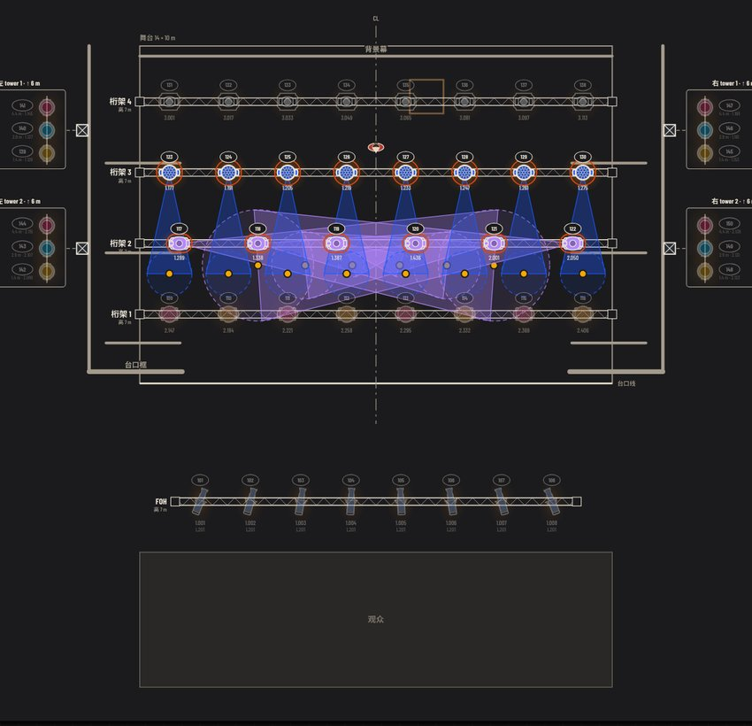
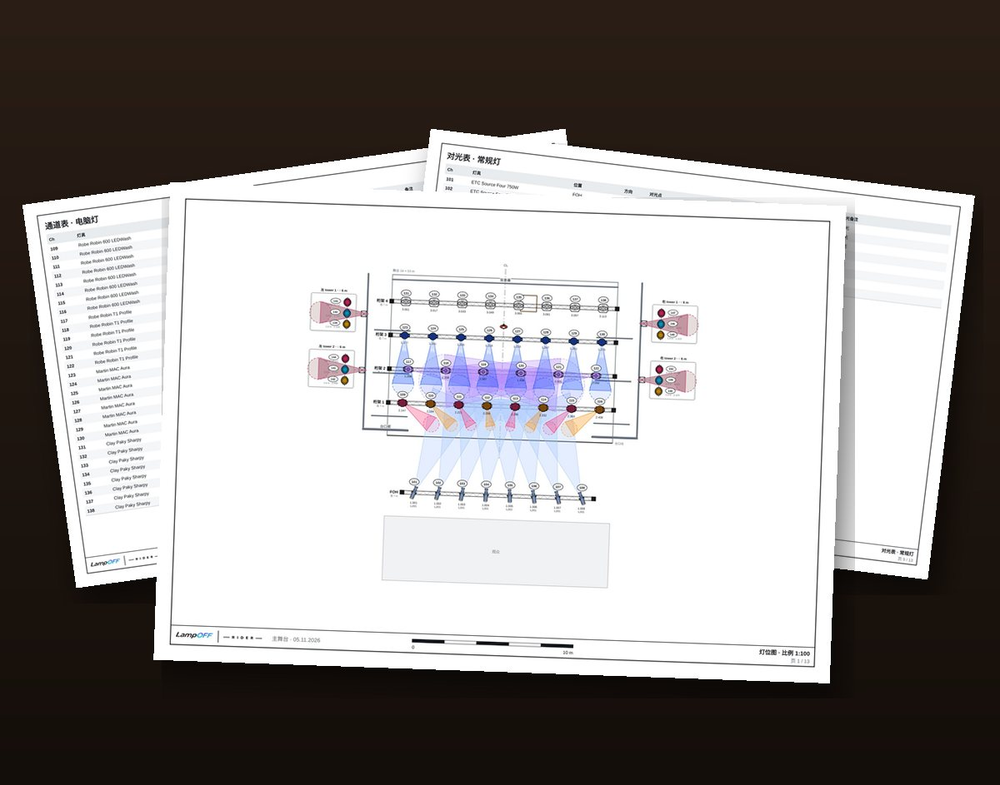
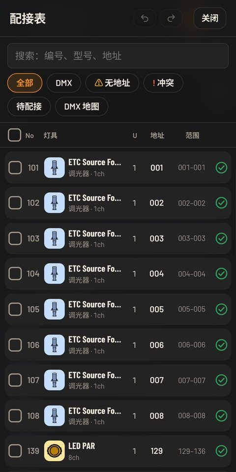
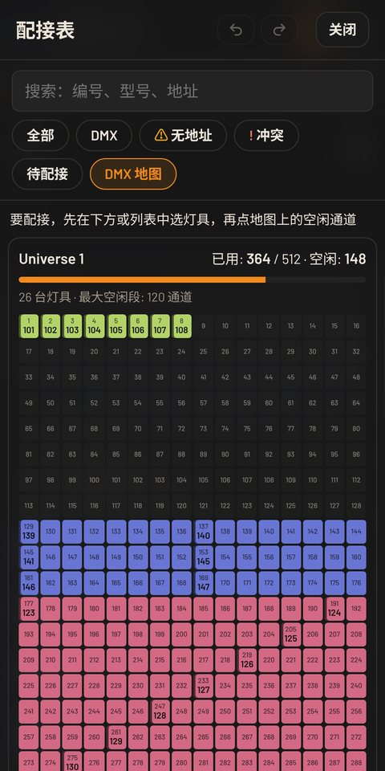
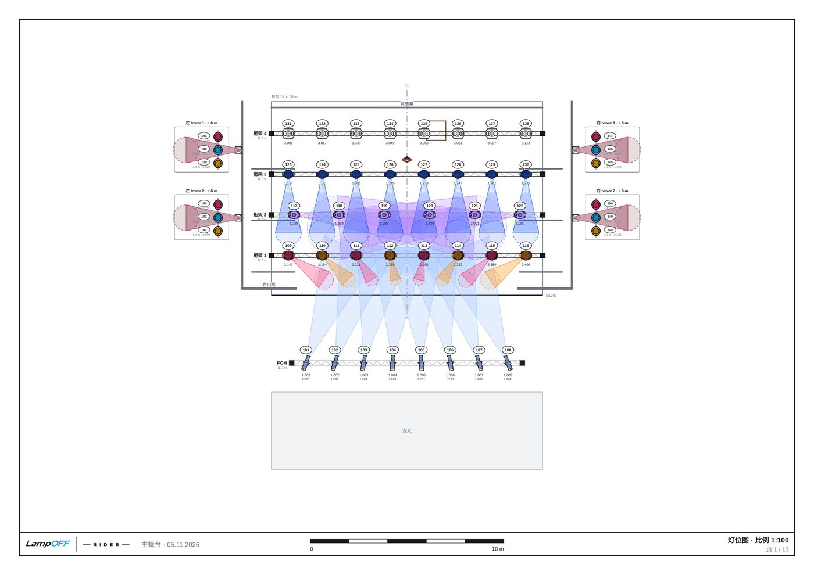
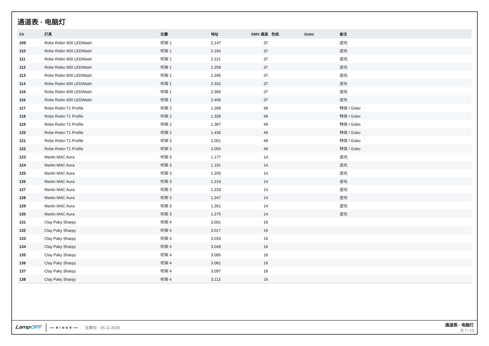
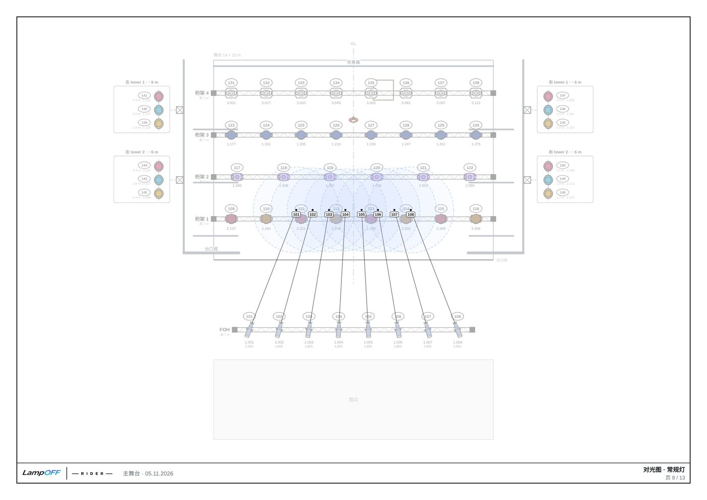

灯位图与吊挂点
舞台、Truss、侧 Truss 和 Tower 按真实尺寸搭建。每台 Fixture 带着 Ch、DMX 地址、色纸和 Gobo 放到图上，同一张图轻点一下就变成 3D。
- 镜框式舞台、黑匣子、竞技场和电视演播室模板
- 数千种 Fixture 型号，GDTF 外形与符号
- 在正视图和侧视图中编辑高度


2D 灯位图3D剧场 · 演唱会 · 巡演
灯位图、Patch 列表、Focus 笔记和 Rider 集于一个项目。在手机和平板上运行，无需联网，无需账号。
LampOff
舞台尺寸、Truss 和 Fixture 只需输入一次；3D 视图、Patch 列表、DMX 地图和巡演所需的全套文件都出自同一个项目。免费、无广告；支持 11 种语言。

灯位图按比例的灯位图 · Truss · Tower 3D烟雾 · 光束 · Gobo
3D烟雾 · 光束 · Gobo

RIDER巡演文件一应俱全舞台、Truss、侧 Truss 和 Tower 按真实尺寸搭建。每台 Fixture 带着 Ch、DMX 地址、色纸和 Gobo 放到图上，同一张图轻点一下就变成 3D。


2D 灯位图3D3D 就是灯位图上的那个舞台：Truss、幕布、布景和观众区都在原位。光束照到哪里就停在哪里；烟雾、场灯和地面让你在排练前就看到效果。

Universe 占用、地址冲突和未设地址的 Fixture 都在一张列表里。DMX 地图以彩色显示每个 Universe 的 512 个 Ch；Focus 模式按 Ch 顺序跟进对光。


按比例的灯位图、器材与功率清单、Truss 负载、Ch 列表、灯位清单、Magic Sheet 和 Focus 记录都在一个 PDF 里。Patch 数据可导出为 MVR、grandMA2 XML、USITT ASCII 和 CSV。



从舞台模板新建项目，轻点即可把 Fixture 挂上 Truss，自动 Patch 分配地址并显示在 DMX 地图上，Rider 带页面预览打开。录制自应用本身。
示例演出
一场用 LampOff 制作的戏剧演出的数据。灯位图、Patch 和 Rider 都在同一个文件里，全部在手机上完成。
文件
从比例灯位图到 Magic Sheet，每一页都出自同一个项目。
兼容性
项目数据可与这些系统双向交换。
技术
评价
用过 LampOff？写几句话告诉我们。审核通过的评价会显示在这里。
还没有评价。来写第一条吧。
不收费。移动应用免费，无广告，也不需要账号。
首次启动后不需要。只有从在线库下载 Fixture 时才会用到网络。
只保存在使用它的手机或平板上。可以把项目保存为 .loff 文件来备份或转到另一台设备（文件 › 保存）。
grandMA3、ETC Eos（Augment3d）、Vectorworks 和 Capture 都能读取 MVR 文件。grandMA2 有 Patch XML，其他系统可用 USITT ASCII 和 CSV。
可以导入 PDF 灯位图：读取图例后，Fixture 会按类型放到 Truss 上。也支持 MVR、CSV 和 DXF；SketchUp、OBJ 和 AutoCAD 图纸可用 转换器 处理后在手机上使用。
投射距离和光斑直径由灯位图、Truss 高度和 Fixture 的光束角计算。照度优先使用 GDTF 配置文件中的光通量，否则按 Fixture 类型估算，并以 * 标注。Truss 负载累加 Fixture 重量和灯钩；不含线缆和保险绳，承重请对照厂家数据表核实。
有。LampOff 在 App Store 免费提供；iPhone 和 iPad 打开的项目文件与 Android 相同。
会。Windows 和 macOS 版本正在准备中，发布时会在本站公布。
图文手册可在应用的 ⋮ › 帮助中找到，也可以在本站 手册 页面查看或下载 PDF。